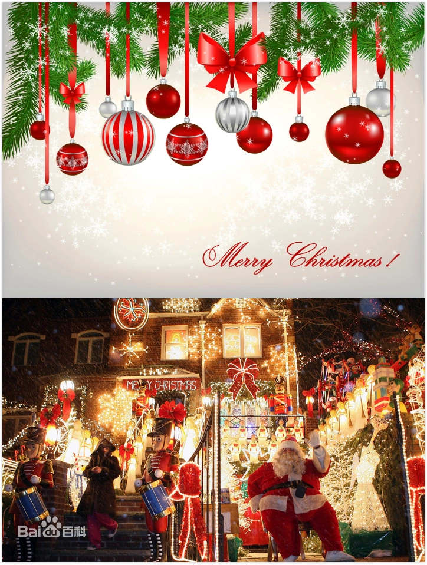

圣诞老人（Santa Claus）是西方神话传说中的人物，在传说中西方圣诞节前夜时悄悄赠送礼物给小孩子，是耶稣基督诞辰瞻礼即西方圣诞节的代表角色之一。他普遍被认为是基督教的圣人圣·尼古拉斯（Saint Nicholas）的衍生形象，圣诞老人的起源或与一种被称为毒蝇伞的红白相间蘑菇有关
传说每到12月24日晚上，有个神秘人会乘驾由9只驯鹿拉的雪橇在天上飞翔，挨家挨户地从烟囱进入屋里，然后偷偷把礼物放在孩子床头的袜子里，或者堆在壁炉旁的圣诞树下。他在一年中的其他时间里，都是忙于制作礼物和监督孩子们的行为。
虽然没有人真的见过神秘人的样子，但是人们会装扮成他的样子来给孩子送上礼物。他通常被描述为一位老人，头戴红色帽子，大大的白色胡子，一身红色棉衣，脚穿黑色靴子的样子，拿着装有礼物的大袋子，因为总在圣诞节前夜出现派发礼物，所以习惯地称他为“圣诞老人”。
圣诞老人源于欧洲的基督教圣人典故。他拥有9只名字各不相同的驯鹿，最大的烦恼是有烟囱爬的房子越来越少了。通常父母们会对他们的子女解释他们在圣诞节收到的礼物是圣诞老人送的。圣诞老人以一位神秘人物带给小孩子们礼物的概念衍生自圣尼古拉。尼古拉是一位生活在4世纪小亚细亚的热爱施舍的慈悲主教，荷兰人在圣尼古拉斯节（12月6日）便会模仿他送礼物。
每年圣诞节，圣诞老人骑在驯鹿上，圣童手持圣诞树降临人间，随着世事变迁，作家和艺术家开始把圣诞老人描述成我们今日熟悉的着红装，留白胡子的形象。同时不同的国度和文化对圣诞老人也有了不同的解释。在许多国家里，圣诞节前夕，孩子们会准备好空的容器，以便圣诞老人可以装进一些小礼物，如玩具、糖果或水果。在美国，孩子们圣诞夜会在壁炉上悬挂圣诞袜，因为圣诞老人说过要在圣诞前夜从烟囱下来把礼物放到袜子里。他们会在壁炉附近的桌子上放上几块姜坚果饼干（gingernut cookies），据说圣诞老人在送来礼物的同时也会吃掉这些饼干。在其他国家，孩子们把空鞋放到户外，以便圣诞老人可以在圣诞夜（或圣尼古拉斯节前夕的12月5日）送礼物。在德国，传说他扮成圣童把坚果和苹果放在孩子们鞋里。他乘双轮马车四处漫游，观察人们的行为，尤其是小孩，如果表现好，将会得到苹果、坚果、糖等诸多奖品。坏孩子则挨一鞭子。家长们灵机一动纷纷采用此传说来鼓励孩子们听话。
在法国与圣诞老人类似的形象是Père Noel，他和圣诞老人几乎完全一样，其红白相间的衣服曾经使可口可乐公司获得灵感，在1930年代画出了传遍世界的圣诞老人主要形象。在一些文化中，圣诞老人身旁跟随着可内希特·鲁普雷希特，或是称作黑彼得（荷文：Zwarte Piet）的家伙。一些版本中，还存在着圣诞奶奶，玩具作坊里的侏儒制作了节日礼物，有时圣诞老人与圣诞奶奶是夫妻。圣诞季期间，在北美和英国的很多超市里，都有小孩可以向其要礼物的圣诞老人出现。
<“正版圣诞老人”，就是在圣诞老人的家乡——芬兰北部拉普兰省圣诞老人村注册，经严格审核培训并持有执照的“圣诞老人”，目前全球仅有50位。他们的出场费20万元，可谓价格不菲。/p>
圣诞老人村（SantaClaus’sHouse）在芬兰拉普兰地区的罗瓦涅米（北极圈内）。
据说每年世界各国的圣诞老人会有一个“世界圣诞老人年会”的聚会，而芬兰的圣诞老人从来不参加这个活动，原因是他们认为圣诞老人在自己国家是一个不言自明的事实，根本不存在其他的圣诞老人。芬兰整个国家宁静安详，宛若世外桃源，圣诞老人如果不住这里，我也想不到更好的去处。姆米加上圣诞老人，还有这么多的湖泊、森林、可爱的松鼠，足以使芬兰成为全球儿童的向往之地。
说起圣诞老人村（SantaClaus’sHouse），全世界最有名也最正宗的当属位于北极圈上的这个，拉普兰地区的罗瓦涅米（Rovaniemi）。坐芬兰国家铁路从赫尔辛基去罗瓦涅米，是非常愉快的旅程。可以把汽车随火车托运，芬兰国铁的火车如同西欧国家的火车一样，非常干净，头等车厢的每个包厢都有自己的洗浴设备。夜晚乘坐火车奔向北极圈上的罗瓦涅米，看着窗外夜色里明镜般的月亮，还有月光下掠过的针叶林和水面上闪耀的月华光芒，是芬兰旅程里难忘的记忆。
圣诞老人是不同传说和神秘人型的结合体。传说圣诞老人是在数千年前的斯堪的纳维亚半岛即出现。北欧神话中司智慧、艺术、诗词、战争的奥丁神，寒冬时节，骑上他那八脚马坐骑驰骋于天涯海角，惩恶扬善，分发礼物。与此同时，其子雷神穿红衣以闪电为武器与冰雪诸神昏天黑地恶战一场，最终战胜寒冷。据异教传说，圣诞老人为奥丁神后裔。在德国中部和北部地区，尼古拉斯被称为“圣诞老人”，在英国被称为“圣诞父亲”，被美国的荷兰移民称为后来的“SantaClaus”。
在荷兰的传说中，圣诞老人Sintirklass还带了一个叫BlackPeter的助手，乘着一艘船来到。他带着一本大书，书中描述了所有荷兰小孩在过去一年中的表现。表现好的小孩就送礼物给他们，不好的小孩便让他的助手(驯鹿）带走。
孩子们都想知道圣诞老人住在何处，他们何时会收到礼物。答案通常是圣诞老人住在北极，他的作坊生产圣诞礼物。1927年被孩子们称做“Markus叔叔”的儿童节目主持人MarkusRautio第一次透露：圣诞老人生活在拉普兰的Korvatunturi。
1950年开始，圣诞老人快乐地逗留在napapiiri,除了圣诞节还要和孩子们及年轻人进行沟通。越来越多的人定期拜访圣诞老人，1985年，他建立了自己的工作室，每天圣诞老人都来办公室倾听孩子们的圣诞祝愿并和他们沟通交流。圣诞老人村是圣诞老人的主要邮局，它接收全世界孩子们发给圣诞老人的信件。